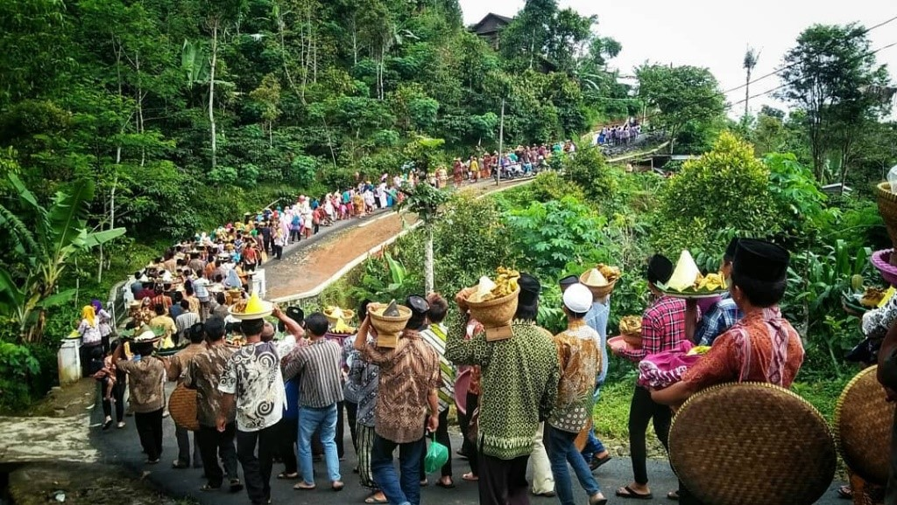

Sejarah Prangkokan
Sejarah Lengkap
Desa Prangkokan
Tidak ada yang tahu dengan pasti kapan Desa Prangkokan berdiri, namun berdasarkan wawancara dengan para sesepuh desa (tokoh masyarakat) dan cerita yang berkembang di masyarakat, Desa Prangkokan berdiri di sekitar masa perang Diponegoro. Jika hal ini benar maka Desa Prangkokan berdiri sekitar tahun 1825 – 1830 (Masa terjadinya perang Diponegoro). Hal ini cukup masuk akal jika dilihat jumlah penduduk Desa Prangkokan saat ini yang hanya berjumlah 800an jiwa.
Bukti bahwa Desa Prangkokan didirikan pada masa perang Diponegoro adalah penamaan daerah-daerah di Desa Prangkokan yang sangat kental dengan suasana perang. Seperti nama Desa Prangkokan itu sendiri, nama “Prangkokan” konon katanya berasal dari kata “Prang” yang artinya “Perang” dan “Kokan” yang artinya “Ongkok-ongkokan”. Jadi Prangkokan yaitu sebuah perang bicara atau adu mulut secara keras kerasan yang tidak menemukan titik terang atau menghasilkan sebuah keputusan. Dan perang tersebut terjadi di sebuah batu yang saat ini dinamakan batu “Segeblok” yang berasal dari kata “Geblok” atau dalam Bahasa Indonesia bisa diartikan seri yaitu ketika terjadi perang di daerah ini tidak ada yang kalah juga tidak ada yang menang. Selain itu ada juga daerah di desa Prangkokan yang dinamakan “Sedian” konon katanya Sedian berasal dari kata “Nyediani Prajurit” alias daerah ini dulunya adalah markas para prajurit.
Konon katanya Desa Prangkokan dahulu adalah sebuah hutan yang dijadikan salah satu tempat persembunyian pasukan Pangeran Diponegoro. Pada masa itu ada salah satu tokoh yang diyakini sebagai salah satu pasukan (juga diyakini sebagai pendiri Desa Prangkokan) yaitu Ki Amongtono. Ki Amongtono diyakini sebagai salah satu pasukan pangeran Diponegoro yang sangat sakti, beliau sangat sulit untuk dibunuh pasukan Belanda. Setiap kali beliau dibunuh maka ketika beliau dikubur beliau akan hidup kembali selama jasadnya masih menjadi satu. Sehingga untuk membunuhnya beliau dipotong menjadi dua bagian badannya dikubur di dusun Ngrimpak Desa Lowungu yang kemudian disebut “Ki Amongrogo” dan kepalanya dikubur di Desa Prangkokan yang kemudian disebut “Ki Amongtono”. Hingga saat ini nama Ki Amongtono selalu disebut dalam doa-doa masyarakat Desa Prangkokan Ketika punya hajat.
Selain Ki Amongtono, dipercaya juga ada tokoh bernama Kiyai Brindil dan Nyi Brindil yang ikut membuka hutan dan mendirikan perkampungan di Desa Prangkokan. Kyai Brindil dipercaya berasal dari kerajaan di Yogyakarta. Petilasan Kyai Brindil dan Nyi Brindil dipercaya terletak di batu Segeblok. Setiap hari Selasa Kliwon atau Jum’at Kliwon di bulan Ruwah (Syakban) seluruh warga Desa Prangkokan melakukan upacara adat Nyadran di petilasan Kyai Brindil dan Nyi Brindil yang terletak di Batu Segeblok. Upacara adat nyadran ruwah dimulai ketika pagi hari masyarakat Desa Prangkokan melakukan kegiatan “Bersih” di makam desa kemudian setelahnya para warga berkumpul di batu Segeblok membawa Tumpeng beserta Ayam Ingkung. Tumpeng dan ayam ingkung ini adalah salah satu lambang wujud syukur Masyarakat Desa Prangkokan terhadap Tuhan Yang Maha Esa. Dalam acara nyadran ini juga digelar doa secara bersama-sama yang dipimpin oleh tokoh adat. Doa ini bertujuan untuk mengirim doa bagi para pendahulu Desa Prangkokan dan juga untuk meminta keselamatan agar seluruh masyarakat Desa Prangkokan dijauhkan dari segala bala dan marabahaya. Setelah doa selesai digelar kemudian para warga desa makan tumpeng dan ingkung yang dibawa secara bersama-sama. Tidak diketahui sejak kapan acara adat ini berlangsung yang jelas upacara nyadran ini sudah berlangsung turun temurun dan masih terus dilestarikan sampai sekarang.
Selain upacara adat nyadran di “Batu Segeblok”, setiap hari Selasa Kliwon atau Jum’at Kliwon pada bulan Sura (Asyura/Muharam) juga diadakan ritual Nyadran di petilasan Kyai Siswoyo dan Nyi Siswoyo yang terletak di sebuah pohon Pule di areal Wisata Alam Bukit Kembang Arum Desa Prangkokan. Ki Siswoyo dan Nyi Siswoyo dipercaya oleh masyarakat Prangkokan sebagai danyang yang menjaga Desa Prangkokan.
Berbeda dengan upacara adat nyadran di petilasan Kyai Brindil dan Nyi Brindil di Segeblok yang tidak diketahui sejak kapan upacara adat itu dilaksanakan, upacara adat nyadran di petilasan Kyai Siswoyo dan Nyi Siswoyo ini baru dimulai pada tahun 2019. Dalam acara nyadran ini juga dilaksanakan doa bersama yang dipimpin oleh tokoh adat dan masyarakat sekitar. Setelah doa selesai masyarakat yang mengikuti ritual ini kemudian makan bersama di lokasi nyadran.
Konon katanya pada zaman pemerintahan Hartodikromo ini dulu pernah terjadi pagebluk di Desa Prangkokan dimana dalam satu hari bisa lebih dari satu orang meninggal dunia. Untuk mengakhiri pagebluk tersebut Mbah Hartodikromo berkonsultasi dengan tokoh sesepuh (paranormal) dan beliau mendapatkan sebuah petuah bahwa untuk mengakhiri pagebluk ini harus dilakukan beberapa ritual ritual yaitu:
1. Harus dibangun sebuah wangan (saluran air) yang sampai ke Desa
Maka pada masa pemerintahan mbah Hartodikromo dibangunlah wangan (saluran air) dari Tuk (mata air) Jambu sampai ke tengah tengah Desa Prangkokan (sekarang menjadi Balai Desa Prangkokan). Selain secara kepercayaan, air ini juga mampu meningkatkan kesejahteraan masyarakat karena masyarakat jadi mudah memperoleh air bersih untuk keperluan sehari hari.
2. Melakukan ritual topo bisu mengelilingi desa pada malam Jum’at Kliwon atau Selasa Kliwon di Bulan Suro.
Maksud dari Topo Bisu ini adalah sebuah Do’a agar masyarakat Desa Prangkokan di jauhkan dari segala bala dan marabahaya. Kegiatan ini masih dilaksanakan hingga saat ini. Setiap malam Jum’at Kliwon atau Selasa Kliwon di Bulan Suro maka Bapak Kepala Desa dan Ibu Kepala Desa serta beberapa perangkat Desa melakukan ritual Topo Bisu keliling desa. Prosesi Topo Bisu ini sekilas hampir sama dengan Topo Bisu Mubeng Benteng di keraton Kasultanan Yogyakarta.
Pada saat Bapak Kepala Desa melakukan ritual Topo Bisu ini maka warga masyarakat lainnya akan berkumpul di rumah Bapak Kepala Desa untuk melakukan Tirakatan yang intinya memohon keselamatan untuk seluruh masyarakat Desa Prangkokan.
3. Melakukan Nyadran (Upacara adat) di petilasan Ki Siswoyo dan Nyi Siswoyo.
Berbeda dengan ritual Topo Bisu Keliling Desa yang hanya dilakukan oleh Bapak kepala Desa dan Ibu kepala Desa serta Perangkat Desa dan beberapa warga saja, dalam ritual Nyadran ini wajib diikuti oleh seluruh keluarga di masyarakat Desa Prangkokan. Dalam upacara adat ini biasanya masyarakat membawa sebuah Tumpeng dan satu ekor ayam ingkung sebagai wujud syukur kepada Tuhan Yang Maha Esa. Tumpeng ini dibawa ke Petilasan ki Siswoyo dan Nyi siswoyo yang kemudian dimakan secara Bersama sama setelah dibacakan Do’a yang dipimpin oleh Tokoh Adat.
Pada masa pemerintahan Mbah Hartodikromo juga dibangun saluran irigasi yang cukup Panjang yaitu saluran irigasi yang biasa oleh masyarakat Prangkokan disebut wangan Sekandang. Dengan adanya wangan sekandang ini masyarakat desa prangkokan yang berada diperbukitan akhirnya mampu menanam tanaman pangan (Padi dan Jagung) sehingga dengan adanya wangan ini mampu menambah kesejahteraaan masyarakat Desa Prangkokan. Sebelum melakukan upacara adat nyadran maka Sebagian masyarakat Prangkokan akan melakukan selamatan di Tuk (Mata air) Sekandang ini.
Dengan selesainya pembangunan wangan sekandang ini maka dulu diadakan syukuran dengan mengadakan pertunjukan Wayang Kulit. Wayang kulit ini selain sebagai bentuk rasa syukur atas selesainya pembangunan wangan sekandang juga dilakukan untuk meruwat Desa Prangkokan. Dalam wayang ruwat ini tidak sembarang Dalang dan Lakon yang memainkan dan dimainkan dalam wayang ini. Dalang ruwat ini dahulu dilakukan oleh Pak Dalang Semprul dan sepeninggal Pak Dalang semprul sekarang digantikan oleh Putranya yaitu Pak Dalang Kamsu. Lakon yang dimainkan dalam wayang ruwat ini juga tidak boleh sembarangan. Lakon yang biasa dimainkan yaitu Rama Tambak dan Bangun Candi hal ini sesuai dengan hajat pertama wayang ini yaitu pembangunan wangan (saluran irigasi) Sekandang.
Iring Iringan Nyadran
Urutan rangkaian Ruwatan Desa / Nyadran Syura Desa Prangkokan
1. Bapak Kepala Desa dan Perangkat Desa melakukan ritual Topo Bisu keliling desa pada malam selasa kliwon atau jum’at kliwon bulan Syura sedangkan masyarakat desa melakukan tirakatan di rumah bapak kepala desa.
2. Pagi hari masyarakat melakukan “Bersih” yaitu kerja bakti membersihkan makam dan berdo’a mengirim do’a untuk leluhur masing masing.
3. Melakukan selamatan di Tuk (Mata Air) Sekandang, Ngares, dan Pucung. Di Tuk Sekandang juga dilakukan ritual memandikan wayang yang akan digunakan untuk wayang ruwat sore harinya.
4. Melakukan ritual nyadran di punden Kyai Siswoyo dan Nyi Siswoyo yang terletak di Pohon Pule di areal Wisata Alam Bukit Kembang Arum.
5. Melakukan Wayang Ruwat di sore harinya.